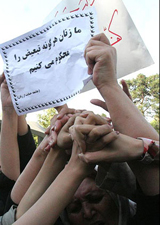

پذيرش > تریبون > گفت و گو > امروز فقط تعدادی فعال پایتخت نشین نیستند که دغدغه استیفای حقوق زنان دارند


 امروز فقط تعدادی فعال پایتخت نشین نیستند که دغدغه استیفای حقوق زنان دارند امروز فقط تعدادی فعال پایتخت نشین نیستند که دغدغه استیفای حقوق زنان دارند
24 بهمن 1385 - گفتگو با مهرنوش نجفی راغب، عضو شورای شهر همدان، حقوقدان و فعال امور اجتماعی و زنان / نیلوفر انسان - نسخه قابل چاپ
در انتخابات روز 24 آذر 85 ، برخی از زنان فعال امور اجتماعی و زنان موفق به ورود به شورای شهر و روستا شدند.مهرنوش نجفی راغب ، از اعضای کمپین یک میلیون امضاء نیز از جمله این زنان بود. او که 27 سال سن داشته و متولد همدان است تحصیلات خود را در رشته حقوق قضایی به پایان رسانده و به عضویت کانون وکلای استان همدان در آمد. اوهم چنین با 5 سال سابقه فعالیت در سازمان های غیر دولتی در زمینه های میراث فرهنگی و زنان ، در حال حاضر در حال ثبت موسسه ای است به نام "خانه زنان هودانا". از دیگر فعالیت های وی می توان به تسهیلگری و آموزش گری کارگاه های حقوق شهروندی، زنان و آسیب های اجتماعی، مسایل حقوقی زنان و وکالت حقوق بشری ، عضویت در >شبکه وکلای داوطلب دفاع از زنان در شرایط خاص< و نیز نوشتن گزارش و مقاله در نشریات اشاره کرد.درباره کمپین با او به گفت و گو نشستیم .
شما از اعضای کمپین یک میلیون امضاء برای تغییر قوانین تبعیض آمیز هستید.چرا کمپین یک میلیون امضاء؟و اصولا چه تفاوتی بین کارزار های این چنینی با سایر استراتژی ها می بینید؟
به هر حرکتی که در راستای احقاق حقوق زنان و کلا حقوق شهروندی باشد و جنبه شعاری و کلیشه ای نداشته و پشت پرده آن هم اهداف سیاسی نباشد علاقه مندم. ضمن آنکه احساس می کردم که این کمپین، برنامه فرهنگی ای را دنبال می کند و یکی از اهداف مهمش هم آموزش است که یکی از نکات مثبت این کمپین هم محسوب می شود.
از جمله انتقاداتی که به کمپین یک میلیون امضاء می شود قرار گرفتن آن در چهار چوبی است به نام اسلام. و اینکه جنبش زنان ایران با چنین خواسته های لیبرالی به انحراف کشیده می شود.نظر شما در این باره چیست؟
اتفاقا یکی از مشکلات همیشه این بوده که آنچه را در کشورهای توسعه یافته می دیدیم الگو برداری کرده و می خواستیم آنرا در ایران به همان شکل پیاده کنیم که معمولا هم با مشکل مواجه می شده چراکه به بومی سازی فرهنگی فکر نمی کنیم . درست است که حقوق بشر همه جا و برای همه، یکی است اما به هر حال هر ملتی برخی سنت هایی دارد که هزاران سال است با آن ها زندگی می کند، بنابراین بایستی ضمن احترام به سنت های خود و آیین و مذهب پذیرفته شده، مسائل فرهنگی دیگر را هم ترویج کرد. ضمن آنکه بیشتر مردم ایران مسلمانند و مذهب رسمی کشور نیز اسلام است پس باید در چارچوب اسلام حرکت کرد و اتفاقا می توان دیدگاههای منفی و سنتی را نسبت به حقوق زنان با یاری گرفتن درست ازدین اسلام تصحیح کرد. مثل همین کاری که کمپین می کند.
برای اینکه بی طرفانه به قضاوت بنشینیم اجازه دهید این سوال را هم از شما بپرسم که آیا اصلا خواسته های این کارزار را در تناقض با اسلام می بینید؟ برخی به دلیل جاری شدن این قوانین از شارع مقدس عوض شدن آنها را مخالف مبانی اسلام می دانند.نظر شما چیست؟
اصلا نمی توان گفت که خواسته های کمپین در تناقض با اسلام است. درست است که قوانین مدنی و جزایی ما از فقه گرفته شده است اما همانطور که می دانید فقه شیعه، پویا است و راه برای تغییر قوانین، متناسب با زمان باز است. بنابراین با توجه به پویایی فقه شیعه و با توجه به رشد فکری جامعه می توان قوانین را تغییر داد تا کارایی بیشتری داشته و موثر واقع گردد.
از ویژگی های کمپین در اختیار گرفتن عرصه های عمومی چون مترو و اتوبوس ها است.عرصه عمومی ای که وقتی در روز 22 خرداد زنان تلاش کردند که ساعتی در اختیار بگیرند شاهد برخوردهایی با زنان بودیم که خودتان حتما اطلاع دارید. و البته این مسئله امضاء گرفتن در مترو و اتوبوس اخیرا برای برخی از دوستان نیز درد سر ساز شده است. چقدر بردن و طرح مسائل زنان در عرصه عمومی به این روش را را موثر می دانید؟عرصه ای که اغلب از آن به عرصه مردانه تعبیر می شود؟!
واضح است که برای آموزش باید وارد عرصه عمومی شد. عمومی سازی فرهنگ اصل مهمی است که بایستی با حضور در عرصه های اجتماعی به آن پرداخت. اما می دانیم که بعضی وقت ها مشکل ایجاد می شود مثلا همان جمع آوری امضا در مترو. بگذارید نمونه دیگری از این تجربه حضور در عرصه عمومی را برایتان بگویم که با مشکل مواجه شد. یکبار برای شب چارشنبه سوری در همدان، تصمیم به تهیه بروشوری گرفتیم برای معرفی درست این جشن و توصیه های شهروندی که ترقه زدن و ایجاد مزاحمت برای دیگران درست نیست و ..... (یعنی آموزش). این بروشورها قرار بود در سطح شهر پخش شوند. این کار هیچ منع قانونی نداشت. چرا که بروشورها دارای متن فرهنگی، آموزشی بود و هم اینکه از سوی یک NGO که مجوز فعالیت داشت و در زمره اهدافش هم بود تهیه و پخش می شد. با این حال در حین پخش بروشورها ، برای 3 نفر از بچه ها در نقاط مختلف شهر مشکل پیش آمد و این طور برداشت شده بود که این ها دارند شب نامه پخش می کنند!! خلاصه با کلی توضیح به اینکه مجوز فعالیت داریم و هدف از پخش بروشورها هم آموزش است و ... مشکل رفع شد و جلوی پخش را نگرفتند. می خواهم بگویم که متاسفانه هر حرکتی ممکن است سیاسی برداشت شود به همین دلیل است که حضور در عرصه عمومی کمی مشکل به نظر می رسد. اما بالاخره هر حرکت اجتماعی با حضور در عرصه عمومی نتیجه خواهد داد (البته به شیوه درستش). در این کمپین هم با حضور در عرصه اجتماعی ممکن است این اتفاقات باز تکرار شوند اما(اگر چه سخت باشد) باید این دیدگاه را به مرور تغییر داد که هدف، سیاسی نیست و آموزش است.
برخی از منتقدین، 22 خرداد 85 را بهایی گزاف برای جنبش زنان ایران دانستند. در عین حال هم وقتی صحبت از امضاء می شود معتقدند که زنان باید خودشان آگاهی پیدا کنند؟!یک بام و دو هوا! برخی هم کمپین را از بن آن اشتباه می دانند که درباره آن صحبت کردیم و بعضی دیگر نیز معتقدند در کنار کارزار های اینچنینی تجمعاتی همانند 22 خرداد نیز باید وجود داشته باشد.نظر شما چیست؟ کارزار اینچنینی را موثر تر می دانید یا تجمعاتی همانند 22 خرداد و یا اصولا تلفیقی از هر دو را؟
راستش بعضی وقت ها بعضی تجمعات جواب نداده و نتیجه معکوس هم دارد. در واقع هر حرکتی در هر شرایط جواب نمی دهد. ببینید مثلا همین تجمع 22 خرداد. نمی گویم که حرکت خوبی نبوده اما نسبت به هزینه ای که بابت آن داده شد نتیجه خیلی موفقی نداشت. متاسفانه در طول تاریخ جوامع، از زنان به عنوان یک ابزاربرای اهداف سیاسی استفاده شده است. بعد از این تجمع نیز،گروه های مختلف سیاسی داخل و خارج ایران به نفع خود یک گوشه این تجمع را گرفتند و بنا بر نگاه خود با قرائت های مختلف سیاسی آنرا تحسین یا تقبیح کردند(البته به بازتاب آن در خارج از کشور کاری ندارم چون مهم آن است که ببینیم در داخل کشور و بین همین مردم بعد از تجمع چه اتفاقی افتاده).
دوم اینکه، از این تجمع (که فقط فعالان حقوق زنان و برخی از زنان تهرانی حضور داشتند) چقدر زنان دیگر شهرهای دور افتاده کشور خبردار شدند؟! آیا جز معدودی از فعالان اجتماعی و خوانندگان روزنامه ها و سایت های اینترنتی و قشر روشنفکر، زنان دیگری در سراسر کشور از هدف اصلی برگزاری این تجمع آگاه شدند؟!به نظر من نتوانست تغییرات فکری گسترده ای ایجاد کند.اما کمپین یک میلیون امضا، امروز به دست خیلی ها در شهرهای مختلف رسیده. یعنی یک حرکت ریشه ای و درست و بدون هیاهو که نه تنها در سطح گسترده به آگاه سازی عمومی می پردازد بلکه موجب ایجاد ارتباط بین فعالان و علاقه مندان در شهرهای مختلف شده است. یعنی ارتباط گیری( که نبودش، یکی از نقاط ضعف بیشتر جنبش های اجتماعی است) در این کمپین تقریبا دارد جا می افتد. دیگراینکه امروز فقط تعدادی فعال پایتخت نشین نیستند که دغدغه استیفای حقوق زنان را دارند بلکه گروه های زیادی در شهرهای مختلف هستند که زنجیره وار به هم پیوسته اند و با هم ارتباط دارند و این یکی از نکات خوب دیگر این کمپین است .
نقش آگاهی عمومی که هدف اصلی در فاز اول کمپین می باشد را در پیشبرد اهداف فاز دوم آن که لابی برای تغییر قوانین است چه طور ارزیابی می کنید؟
مسلما هر حرکت اجتماعی در ابتدا به یک آگاه سازی عمومی نیازمند است. چنانچه آگاه سازی صورت نگیرد و یا به شکل درست آن انجام نشود و افراد به دلایل دیگر جذب شوند، باید کم کم انتظار انحراف حرکت اجتماعی را داشت. بنابراین برای اینکه جنبش اجتماعی به بیراهه نرود و از هدف اصلی خود خارج نشود باید ابتدا آگاه سازی و آموزش صورت بگیرد. آن هم در سطح گسترده که فکر می کنم کمپین تا حدودی خوب عمل کرده است.
و کلام آخرتان ؟
ببینید، درخواست برای تغییر قوانین مدنی و جزایی ربطی به مخالفت با نظام ندارد. ما داریم از همین نظام درخواست می کنیم که قوانین عوض شوند. طرح ها و درخواست هایمان را باید با دولتی ها در میان بگذاریم چراکه در واقع از دولت و حکومت می خواهیم برای تغییر قوانین کمک بگیریم.تلاش برای بهبود زندگی زنان، یکی از اهداف توسعه هزاره است که کشورمان نیز به آن پای بند است. بنابراین نگاه سیاسی به این حرکت اشتباه است. و البته نباید اجازه دهیم که هیچ گروه سیاسی( چه در داخل و چه در خارج) از کمپین بهره برداری سیاسی کند. کمپین متعلق به تمام زنان و مردانی ست که بدون توجه به گرایش های سیاسی، تنها دغدغه بهبود شرایط و قوانین حوزه زنان را دارند.
ارسال به
بالاترین
،
توییتر
،
فریندفید
،
فیسبوک
در همين بخش :
 دهمین دورۀ مراسم تندیس صدیقه دولت آبادی ۱۳۹۲ دهمین دورۀ مراسم تندیس صدیقه دولت آبادی ۱۳۹۲
کارت پستالهایی به بهانهی هشت مارس و به یاد همهی مبارزین راه برابری
بیانیه بیش از 350 تن از مدافعان حقوق زنان به مناسبت روز جهانی زن؛ زنان هر روز فرودستتر میشوند
لباسی که برای تن ما دوخته اند! /اعظم بهرامی
چالشها و چشمانداز فعالیت مدنی زنان
ديگر بخش ها :
طرح یک میلیون امضا
|
مقالات
|
سایت نوشته ها
|
اخبار
|
گزارش كمپين
|
گفت و گو
|
علیه سکوت
|
كوچه به كوچه
|
نامه های شما
|
گزارش ویژه
|
گفتگو با اعضا
|
ویژه سالگرد کمپین
|
تصویر برابری
|
دل آرام علی
|
تریبون
|
مقالات
|
تاریخ شفاهی
|
خارج از چارچوب
|
کتابخانه
|
درباره کمپین
|
کمپین در شهرها
|
کمپین در بند
|
صدای تغییر
|
ویژه 22 خرداد
|
لایحه حمایت از خانواده
|
گالری
|
عشا مومنی
|
امیر یعقوبعلی
|
خدیجه مقدم
|
راحله عسگری زاده و نسیم خسروی
|
پروین اردلان،جلوه جواهری، مریم حسین خواه، ناهید کشاورز
|
زینب پیغمبرزاده
|
سعیده امین، سارا ایمانیان، محبوبه حسین زاده، ناهید کشاورز و همایون نامی
|
احترام شادفر
|
نسیم سرابندی زاده،فاطمه دهدشتی
|
وبلاگ مهمان
|
پرونده خرم آباد
|
دستگیری ها
|
مریم مالک
|
پرستو اللهیاری
|
مهرنوش اعتمادی
|
سمیه رشیدی
|
Other Languages
|
همراهان
|
«فراخوان کمپین ده روز با بهاره هدایت»
| English
|